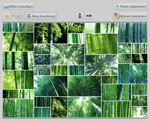

PhotoCollage
Dieser Artikel wurde für die folgenden Ubuntu-Versionen getestet:
Ubuntu 16.04 Xenial Xerus
Ubuntu 14.04 Trusty Tahr
Zum Verständnis dieses Artikels sind folgende Seiten hilfreich:
PhotoCollage  ist ein kleines Programm, um mehrere Bilder zu einem neuen zu kombinieren. Viel Auswahl beim Layout gibt es nicht: es existiert nur ein vorgegebenes Raster, das in Grenzen variiert werden kann.
ist ein kleines Programm, um mehrere Bilder zu einem neuen zu kombinieren. Viel Auswahl beim Layout gibt es nicht: es existiert nur ein vorgegebenes Raster, das in Grenzen variiert werden kann.
Der Programmautor Adrien Vergé gibt selbst zu, dass die Funktionen des Programms sehr eingeschränkt sind und es in Konkurrenz mit zahlreichen Webseiten und entsprechenden Online-Werkzeugen steht. Allerdings hat PhotoCollage einen entscheidenden Vorteil: Zur Collagen-Erstellung müssen keine Bilder irgendwohin übermittelt werden – es arbeitet ohne Internet-Zugang. Ein weiterer Pluspunkt ist die extrem einfache Bedienung. Erstellt wurde das Programm mit Python.
Installation¶
 PhotoCollage ist ab Ubuntu 16.10 in den offiziellen Paketquellen enthalten. Folgendes Paket muss installiert werden [1]:
PhotoCollage ist ab Ubuntu 16.10 in den offiziellen Paketquellen enthalten. Folgendes Paket muss installiert werden [1]:
photocollage (universe)
 mit apturl
mit apturl
Paketliste zum Kopieren:
sudo apt-get install photocollage
sudo aptitude install photocollage
Bei älteren Ubuntu-Versionen kann man zur Installation auf ein "Personal Package Archiv" (PPA) [2] ausweichen, wenn man das Programm nicht aus dem Quellcode installieren möchte.
PPA¶
Dariusz Duma stellt sein PPA als Paketquelle zur Verfügung. In diesem PPA sind zahlreiche andere Programme wie RawTherapee oder Luminance HDR enthalten, die sich mit dem Thema (RAW-)Fotografie und Bildbearbeitung unter Linux beschäftigen. Um Problemen mit den offiziellen Paketquellen vorzubeugen, wird empfohlen, das PPA nach der Installation wieder zu deaktivieren oder Apt-Pinning zu nutzen.
Adresszeile zum Hinzufügen des PPAs:
ppa:dhor/myway
Hinweis!
Zusätzliche Fremdquellen können das System gefährden.
Ein PPA unterstützt nicht zwangsläufig alle Ubuntu-Versionen. Weitere Informationen sind der  PPA-Beschreibung des Eigentümers/Teams dhor zu entnehmen.
PPA-Beschreibung des Eigentümers/Teams dhor zu entnehmen.
Damit Pakete aus dem PPA genutzt werden können, müssen die Paketquellen neu eingelesen werden.
Nach dem Aktualisieren der Paketquellen erfolgt die Installation wie oben angegeben.
Fremdpaket¶
Wer davor zurück scheut, wegen eines einzelnen Pakets gleich ein komplettes PPA einzubinden (und anschließend wieder zu entfernen), kann sich auch ein einzelnes Fremdpaket  herunterladen und manuell [3] installieren. Der Paketname lautet: photocollage_VERSIONdhor~UBUNTUVERSION_ARCHITEKTUR.deb. Nachteilig ist, dass man sich um Programmaktualisierungen in Zukunft selbst kümmern muss.
herunterladen und manuell [3] installieren. Der Paketname lautet: photocollage_VERSIONdhor~UBUNTUVERSION_ARCHITEKTUR.deb. Nachteilig ist, dass man sich um Programmaktualisierungen in Zukunft selbst kümmern muss.
Hinweis!
Fremdpakete können das System gefährden.
Verwendung¶
Bei Ubuntu-Varianten mit einem Anwendungsmenü erfolgt der Programmstart über "Grafik -> PhotoCollage" [4]. Alternativ kann man es mit dem Befehl photocollage im Terminal starten.

Die Bedienung erfolgt in vier Schritten:
"Bilder hinzufügen" (Mehrfachauswahl mit den Tasten ⇧ oder Strg ). Die Anordnung der ausgewählten Bilder erfolgt zufällig. Die Position einzelner Bilder kann aber geändert werden, indem man ein Bild via Ziehen und Fallenlassen (Drag'n'Drop) verschiebt (oder löscht).
Rasterfarbe und -stärke auswählen. Bei der Rasterfarbe stehen nur schwarz und weiß zur Verfügung. Die Rasterstärke kann variiert werden, aber selbst bei der Einstellung
0bleibt ein dünner Rahmen zwischen den Bildern erhalten.Über zwei Schaltflächen kann zwischen einer vertikalen und einer horizontalen Ausrichtung umgeschaltet werden
Ergebnis als "Poster abspeichern". Hier ist zu beachten, dass die Dateiendung das Bildformat festlegt. Möchte man beispielsweise ein PNG-Bild speichern, gibt man als Dateiname NAME.png ein. Unterstützte Bildformate: BMP, GIF, IM, JPG, MSP, PCX, PNG, PPM, TGA, TIFF, WebP und XBM.
PhotoCollage bietet über die Schaltfläche "Neue Anordnung" die Möglichkeit, weitere Layouts zu erzeugen. Auch mit den bereits erwähnten Schaltflächen zur horizontalen bzw. vertikalen Ausrichtung lassen sich die Anzahl der Rasterspalten und -zeilen beeinflussen. Zwischen den (durchnummerierten) Collagen kann dann bequem hin und her geblättert werden.
Fazit: durch die vielen zufälligen Elemente wenig geeignet, wenn reproduzierbare Ergebnisse gewünscht sind. Auf der anderen Seite besonders reizvoll für kreative Naturen.
Links¶
3 Program to Create Photo Collage in Linux
- Blogbeitrag, 12/2015Make A Photo Collage Easily in Ubuntu 14.04 with PhotoCollage
- Blogbeitrag, 06/2014Fotowall - Eigene Collagen gestalten
- Erstellt mit Inyoka
-
 2004 – 2017 ubuntuusers.de • Einige Rechte vorbehalten
2004 – 2017 ubuntuusers.de • Einige Rechte vorbehalten
Lizenz • Kontakt • Datenschutz • Impressum • Serverstatus -
Serverhousing gespendet von